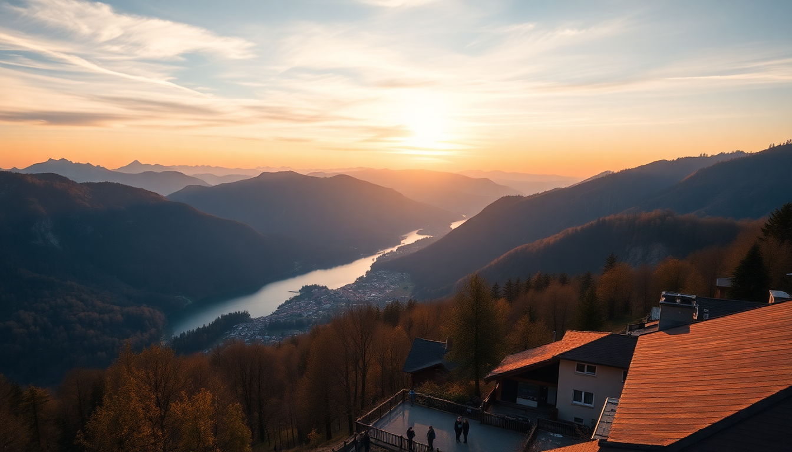

Best Day Trips from Interlaken: Jungfraujoch, Grindelwald & Lauterbrunnen

I spent a week based in Interlaken, using it as a launchpad for three very different day trips. The town itself is fine—split between Interlaken West and Interlaken Ost stations—but the real payoff is what’s an hour or less up the mountain. Here’s what I learned about the big three: Jungfraujoch, Grindelwald, and Lauterbrunnen.
Is Jungfraujoch worth the price?
Jungfraujoch is the most expensive day trip I’ve ever taken. A round-trip ticket from Interlaken Ost to Jungfraujoch (via the Jungfrau Railway) runs around CHF 210 per person, even with a Swiss Travel Pass discount. You’re paying for altitude—3,454 meters—and the engineering that gets you there.
The ride itself is the highlight. You transfer at Kleine Scheidegg, then the train tunnels straight through the Eiger and Mönch mountains. There’s a five-minute stop at the Eigerwand station where you can peer out a window carved into the cliff face. At the top, the Sphinx Observatory gives you a 360-degree view of the Aletsch Glacier. The Ice Palace is a corridor carved into the glacier—cool for ten minutes, then you’ve seen it.
- Is it overrated? Yes, if you’re only going for the “Top of Europe” sign. But the train ride and glacier view are genuinely unique.
- My advice: Go early—first train from Interlaken Ost at 6:35 AM—to beat the crowds. By 11 AM, the platform is shoulder-to-shoulder with tour groups.
- Better value: If you just want high-alpine views without the price tag, take the Schilthorn cable car from Mürren. It’s cheaper and has a rotating restaurant (Piz Gloria) that was a James Bond filming location.
How do I get to Grindelwald and what should I do there?
Grindelwald is a 35-minute train from Interlaken Ost. It’s a proper village, not just a tourist hub, with a main street lined with bakeries and outdoor gear shops. I grabbed a coffee at Café 3692, which has a terrace overlooking the Eiger north face.
The big draw here is the First Cliff Walk. Take the gondola from Grindelwald to Grindelwald First (about CHF 60 round-trip). At the top, there’s a 45-meter suspension bridge and a glass-floored platform that juts out over the valley. It’s free with the gondola ticket, and the view straight down into the gorge is legitimately stomach-dropping.
- Best lunch: Bergrestaurant Bort, halfway up the gondola. Their rösti with cheese and bacon is CHF 18, and the outdoor seating faces the Eiger.
- Skip: The First Flyer zipline. It’s CHF 31 for a 45-second ride. Fun, but not worth the line.
- Alternative hike: If you have 2-3 hours, walk from Grindelwald to the Gletscherschlucht (Glacier Gorge). It’s a boardwalk through a narrow canyon carved by meltwater. Entry is CHF 10, and you’ll get soaked from spray—bring a jacket.
What’s the best way to see Lauterbrunnen?
Lauterbrunnen is the valley floor, famous for 72 waterfalls. It’s a 20-minute train from Interlaken Ost. The village itself is small—one main street, a Coop grocery store, and a lot of souvenir shops selling cowbells. But it’s the base for two things that actually matter: Trümmelbach Falls and the cable car to Mürren.
Trümmelbach Falls is inside the mountain. You take a lift up, then walk through tunnels where ten glacial waterfalls thunder through the rock. It’s CHF 12, and you’ll feel the vibration in your chest. I went in late June when the meltwater was at its peak—the volume is staggering.
- Lauterbrunnen to Mürren: Take the cable car from Stechelberg (a 15-minute bus from Lauterbrunnen) up to Mürren. It’s a car-free village at 1,650 meters with direct views of the Eiger, Mönch, and Jungfrau. I had a beer at the Hotel Eiger terrace—CHF 7 for a local Feldschlösschen.
- Staubbach Falls: The big one visible from the village. You can walk behind it via a short trail. Takes ten minutes. Free.
- Don’t bother: The Lauterbrunnen “waterfall trail” that runs through town. It’s just a paved path next to a stream. The real waterfalls are up the valley.
Can I combine Grindelwald and Lauterbrunnen in one day?
Yes, but it’s tight. The two are connected by a train that runs from Grindelwald to Lauterbrunnen via Zweilütschinen (about 30 minutes). I tried this and felt rushed.
- Morning: Grindelwald First gondola at 8 AM. Do the cliff walk, skip the zipline, be back down by 11:30.
- Lunch: Grab a sandwich from the Coop in Grindelwald station and eat on the train.
- Afternoon: Trümmelbach Falls (closes at 5 PM, last entry 4:30). Then walk to Staubbach Falls before catching the 6 PM train back to Interlaken.
- My take: Pick one and do it well. Splitting the day means you’re spending more time in transit than actually seeing things.
What’s the best time of year for these day trips?
June through September is the sweet spot. The Jungfrau Railway runs year-round, but the hiking trails above Grindelwald and Mürren are only clear of snow from late May to October. I went in late June and had 18 hours of daylight—the first First gondola runs at 8:30 AM, and I was hiking until 8 PM.
- Winter (December-March): Grindelwald is a ski resort. The First Cliff Walk is open, but the trail to Gletscherschlucht is closed. Lauterbrunnen is quieter, but Trümmelbach Falls shuts down in November.
- Shoulder seasons (April, October): Fewer crowds, but expect rain. I had a friend go in early May and said Lauterbrunnen was a misty mess—still beautiful, but you couldn’t see the peaks.
- Peak summer (July-August): Trains are packed by 9 AM. Book Jungfraujoch tickets at least a week in advance.
FAQ
Do I need a Swiss Travel Pass for these day trips? It depends on your itinerary. The Swiss Travel Pass covers the train from Interlaken Ost to Lauterbrunnen and Grindelwald, plus the cable car to Mürren. It gives you a 25% discount on the Jungfrau Railway to Jungfraujoch. If you’re doing two or three of these trips, the pass pays for itself. I did the math: three days of travel cost me CHF 232 with the pass versus CHF 380 without.
Is Jungfraujoch worth it for non-hikers? Yes, because you don’t hike at all. You take trains and elevators the whole way. The Sphinx Observatory and Ice Palace are indoors. If you want an alpine experience without breaking a sweat, it’s your best bet. Just know you’re paying for convenience.
Can I see the Eiger from Grindelwald without taking a gondola? Yes. The north face is visible from the village itself—walk to the end of Dorfstrasse near the Sportzentrum for an unobstructed view. But the perspective from First is dramatically better. You’re looking down at the face rather than up at it.
Conclusion
- Jungfraujoch is a one-time bucket list item. The train ride is the real attraction, not the top.
- Grindelwald First offers the best bang for your time: cliff walk, mountain views, and solid food at Bergrestaurant Bort.
- Lauterbrunnen is best as a gateway to Mürren. Trümmelbach Falls is the only thing in the valley that justifies a stop.
- Don’t combine Grindelwald and Lauterbrunnen in one day unless you enjoy train schedules more than views.
- June and September give you the best balance of open trails, daylight, and manageable crowds.